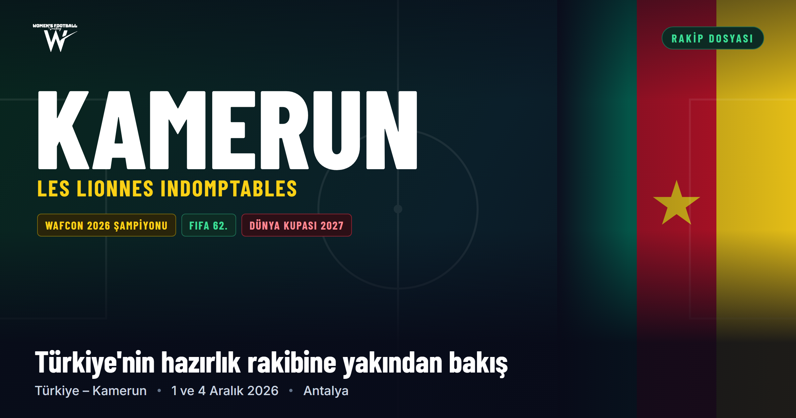

Kamerun Kadın A Millî Futbol Takımı
FIFA'da 62. sırada, 2026 WAFCON şampiyonu, 2027 FIFA Dünya Kupası'nda Brezilya yolcusu. Türkiye'nin 1 ve 4 Aralık'ta Antalya'da iki kez karşılaşacağı rakibe yakından bakış.

Beklenmeyen bir performans ile Afrika Kadınlar Uluslar Kupası'nı (WAFCON) birincilikle bitiren, Dünya Kupası biletini cebine koyan ve tarihinde ilk kez kadın bir antrenör ile çalışan Kamerun Kadın A Millî Futbol Takımı'na daha yakından bakmak, derinlemesine inceleyip detaylı bilgi sahibi olmak için bu yazıyı kaleme aldım.
Türkiye Kadın A Millî Futbol Takımı, Teknik Direktör Necla Güngör Kıragası yönetiminde 1 Aralık 2026 ve 4 Aralık 2026 tarihlerinde Antalya'daki Emir Hotels Arslan Zeki Demirci Spor Kompleksi'nde Kamerun ile iki hazırlık maçına çıkıyor. Kadınlarımız, tabii ki haftalar önce toplanıp, yine gereksiz ve bir o kadar nedensiz fiziki yüklemelere maruz kalarak canından bezdirilecek, gerek beşeri olarak gerek fiziki olarak limit aşımları yaşayacağı bir maratona başladılar. Ama konumuz bu değil. Gelin hep beraber Kamerun'a bakalım…
Künye ve Tarihsel Profil
Kıtanın en köklü ekollerinden biri: üç final kaybından sonra gelen ilk şampiyonluk.
Kamerun kadın futbolu, kıtanın en köklü ekollerinden biri olmasına rağmen uzun yıllar Nijerya'nın, Fas'ın hatta Güney Afrika'nın gölgesinde kalmış ve finallerde kaybettiği üç şampiyonluğun (2004, 2014, 2016) ardından şeytanın bacağını 2026 yazında kırmış köklü bir ekip. Öncelikle hap bilgilerle başlayalım:
- Resmî adı
- Kamerun Kadın A Millî Futbol Takımı
- Lakabı
- Les Lionnes Indomptables (Yılmaz Dişi Aslanlar)
- Federasyonu
- FECAFOOT, Kamerun Futbol Federasyonu
- Renkleri
- Yeşil-Kırmızı-Sarı
- Konfederasyonu
- CAF, Afrika
- Güncel FIFA sırası
- 62. (20.10.2026 itibarıyla, 71. sıradan yükseldi)
- Güncel CAF sırası
- 3. (20.10.2026 itibarıyla, 5. sıradan yükseldi)
- En yüksek FIFA sırası
- 41. (07.2019)
- En düşük FIFA sırası
- 90. (10.2007)
- Teknik direktörü
- Valentine Nguele (06.2026'dan beri)
- En büyük başarıları
- 1× WAFCON şampiyonluğu ('26), 3× WAFCON ikinciliği ('04, '14, '16), 2× Dünya Kupası son 16 turu ('15, '19)
FIFA sıralamasında Kamerun
Saha Dışı
Düşüş, kovulan hoca, son anda gelen davet ve 65 günde kupa.
Kamerun'un son üç yılına bakarsak, yaşadığı kırılma tam bir spor belgeseli senaryosu niteliğindedir:
- 2015 · 20192015 ve 2019 Dünya Kupaları'nda gruptan çıkarak dikkat çeken altın jenerasyon yaşlanınca takım sert bir düşüş yaşadı.
- 20232023 Dünya Kupası play-off'unda Portekiz'e elendiler.
- 20242024 Paris Olimpiyatları'na gidemediler.
- 20242024 Afrika Kupası'nı kaçırdılar.
- Ekim 2025Eleme turunda Cezayir'e toplamda 3-1 yenilerek üst üste ikinci kez Afrika Kupası dışında kalmaları ülkede kadın futbolunun sorgulanmasına yol açtı.
- ArdındanFECAFOOT Başkanı Samuel Eto'o, bu başarısızlığın ardından teknik direktör Jean-Baptiste Bisseck'in görevine son verdi.
- DavetTurnuvaya katılamayacağı kesinleşen Kamerun, CAF'ın turnuvayı 12 takımdan 16 takıma çıkarma kararı sonrası FIFA sıralaması sayesinde son anda kontenjanla 2026 WAFCON'a davet edildi.
- BelirsizlikTakım bu süreçte aylarca teknik direktör belirsizliği yaşadı.
- 12 Haziran 2026Aylarca hocasız kalan takıma, turnuvaya sadece bir ay kala yerel ligde FC Ebolowa ile 16 maçlık yenilmezlik serisi yakalayan eski millî kaleci Valentine Nguele getirildi.
- 65 gün sonraNguele, Kamerun A Millî Kadın Takımı'nın tarihindeki ilk kadın teknik direktör olarak göreve başladı ve 65 gün içinde ülkeye tarihinin ilk kıta kupasını kazandırdı.
Hap bilgi vermek gerekirse; Kamerun'da kadın futbolunun omurgasını Guinness Super League ismiyle birinci kademe lig oluşturuyor. Son yıllarda Amazones FAP, Lekié FF ve FC Ebolowa gibi kulüpler altyapı ve oyuncu ihracatında lokomotif görevi görüyor.
FECAFOOT'un yerel lig için imzaladığı sponsorluk ve maç başı soyunma odası prim (Locker Room Bonus) anlaşmaları yerel oyuncuların ekonomik şartlarını kısmen iyileştirse de, Kamerun futbolunda geleneksel olarak görülen Spor Bakanlığı (MINSEP) – Federasyon yetki çatışmaları ve geçmiş turnuvalardaki prim krizleri kulislerin her zaman hareketli kalmasına neden oldu.
Millî takımın kadro yapısı da bu yerel ligden yetişen fizik gücü yüksek gençlerle oluşturulmuş. Bu kadroya Fransa'da ve ABD'de oynayan profesyonel oyuncuların katılması, hibrit bir millî takım oluşmasına neden oldu ve bu oluşum, başarıyı getirdi.
Saha İçi
Dağınık ve bireysel bir oyundan pragmatik bir turnuva takımına.
Valentine Nguele dokunuşuyla Kamerun, eski dağınık ve bireysel doğaçlamaya dayalı oyunundan uzaklaşıp son derece pragmatik bir turnuva takımına dönüştü. Gerektiğinde rakibe göre oyun içerisinde sistem ve diziliş değişikliğine uğrayan, takıma göre hücum, takıma göre savunma prensibi ile oynayan bir takıma dönüştü. Öncü konularına ise aşağıda detaylıca eğilmek isterim:
Esnek Formasyon
Temel şablonları 1-4-3-3 ve onun savunma varyasyonu olan 1-4-2-3-1 olsa da, Nguele büyük maçlarda orta sahayı kalabalıklaştıran 1-4-5-1 veya savunma halindeyken baklava 1-4-4-1-1 kurgularına geçebiliyor.
Dört şablon, tek kadro
Bir şablon seç; oyuncular yeni yerlerine kayar. Şablonlar yazının anlatımından çizildi, oyuncu isimleri yok: kadro açıklandı, ilk 11 henüz belli değil.
Temel şablon. Hareketli kanat bekleri, aralarında keskin ve görece uzun bir stoper ikilisi.
savunma orta saha hücum
K kaleci · SLB/SĞB sol/sağ bek · STP stoper · DOS savunmacı orta saha · MO merkez orta saha · OOS ofansif orta saha · SLK/SĞK sol/sağ kanat · FV forvet
Savunma Bilinci
2026 WAFCON'un eleme aşamasında çeyrek finalde kıta devi Nijerya'yı 1-0, yarı finalde ev sahibi Fas'ı normal süresi 0-0 biten maçta penaltılarla 3-1 ve finalde Malavi'yi 3-0 yendiler. Eleme turlarında normal sürede kalelerinde hiç gol görmemeleri, takım savunmasının ne kadar kompakt ve disiplinli hale geldiğinin en net kanıtı.
Kupaya giden yol: 2026 WAFCON
Bu noktada ortaya çıkan oyuncu profilleri önem kazanıyor. Hareketli ve dinamik kanat bekleri tercih eden Nguele, onların tandemine keskin, görece uzun savunmacıları yerleştirdi. Savunma disiplinini tam anlamıyla sağlayabilmek adına tandemin önüne genellikle iki adet savunmacı orta saha yerleştirdi. Bu DMF'lerden biri hareketli bir savaşçı, diğeri ise hareketli bir dinamoydu. Böylelikle birçok kez meşin yuvarlak savunmanın derinine gelmeden, bu ikili geçişe dönen oyunun ana merkezi oluyordu. Bu noktada gizli savunmacılar ise hücum kanatlarıydı. Gerektiğinde orta sahasının derinine kadar genişte bekleyen kanatlar adeta kanat bek görevi görüyor, koridoru tümüyle oynayabiliyor, gerektiğinde, yani geçiş hücumuna evrildiğinde ise tam bir kanat forvet gibi hücumda pozisyon alıyorlardı.
Hücum Bilinci
Topa sahip olma yüzdesini kovalamaktan ziyade merkezi kapatıp rakibi kenarlara yönlendiren Kamerun, temelde merkezden oynayan teknik takımlara karşı savunma disiplinini korumayı hedefliyordu. Bunu çoğu kez başardılar ve rakipler sürekli çizgiye deplase olmak zorunda kaldı. Bu anlarda topu kazanmanın daha kolay olduğunu anladıklarında bunu her takıma karşı uygulamayı görev edindiler. Öyle ki topu kenar bölgelerinde merkezden daha fazla kazanıp, merkezdeki dinamik orta sahalar üzerinden dikine ve çok hızlı geçiş hücumuna çıktılar. Fizikî olarak ikili mücadele sertlikleri ve hava topu hakimiyetleri, Türkiye gibi teknik kapasitesi yüksek ancak fiziksel temaslarda özellikle ikinci yarıda dağılan takımlar için en büyük tehdit oldu.
Gelişim Alanları
Kendilerine karşı derin blokta savunma yapan rakiplere karşı set hücumu üretmekte zorlandıkları bilinen bir gerçek. Lakin böylesi güçlü ve hareketli bir takıma derin savunma yapmak da intihar ile mucize arasında ince bir iplik gibi duruyor. Bilhassa grup aşamasında Yeşil Burun Adaları ile 1-1 berabere kaldıkları maçta, maçın onlarca kırılma anında mecazi anlamda direkten dönen taraf hep Kamerun oldu ve Yeşil Burun Adaları 1 puanı cebine koydu.
Ayrıca maç içi gerilim yükseldiğinde kart görmeye yatkın bir yapıları var. Teknik patronun bu konuda oyuncularını sürekli sert bir şekilde uyardığı ve her takım konuşmasında sükûnetten bahsettiği biliniyor.
Son nokta ise oyun prensiplerindeki konum farkındalığı zafiyetleri. Bunun temelinde oyunu doğru kuramama yatsa da, aslında blok yönetimlerinde hatalar yaptıklarını görüyoruz. Bilhassa oyunu doğru anda genişletme ve daraltma konularında hem atik değiller hem de bilinçli olamıyorlar. Yine de bunu süratleri ile bir şekilde egale ettiklerini söyleyebilirim.
Sporcular
Takımın en kritik isimlerinin Türkiye bağlantısı var.
Bizim hiç de uzak olmadığımız bir sporcu grubu var. Bizden kastım TR ligleri takipçileri… Sanırım bu blog yazısında en ilgi çekici kısım burası olacaktır. Çünkü takımın en kritik isimlerinin Türkiye bağlantıları var. Öncelikle açıklanan kadroya ve sonrasında bu kadronun önemli isimlerine tek tek bakalım:
Açıklanan kadro: 27 oyuncu
Kamerun'un 1 ve 4 Aralık maçları için açıkladığı liste (Lionnes Indomptables resmî hesabı, 24 Kasım 2026); mevki grupları listedeki gibi. Yazıda adı geçen oyuncular yazıdaki adlarıyla. Sarı çizgili dört oyuncu Kadın Futbol Süper Ligi'nde oynuyor; listede "Kayserispor" yazan Marlène Essimi'nin kulübü TFF kayıtlarında Kayseri Kadın FK. Resmî liste ↗
Kaleciler 3
- Michaely BihinaBenfica · Portekiz
- Ange BawouDja Sport · Kamerun
- Cathy BiyaÉclair de Saa · Kamerun
Savunma 8
- Colette NdzanaFenerbahçe · Türkiye
- Maëva NyadjouKansas City Current · ABD
- Ousmanou DoudouFC Ebolowa · Kamerun
- Ivana Yakana MakanaLekié FF · Kamerun
- Easther Mayi KithUrawa Red Diamonds · Japonya
- Marlène EssimiKayseri Kadın FK · Türkiye
- Alexandra Francy Lesly EkodeckLekié FF · Kamerun
- Brunda Ingrid Ruth BellaGetafe CF · İspanya
Orta saha 8
- Charlène Meyong MeneneLekié FF · Kamerun
- Achta Toko NjoyaReal Madrid · İspanya
- Monique NgockWashington Spirit · ABD
- Geneviève Ngo MbeleckFC Ebolowa · Kamerun
- Ornella BeulouFC Ebolowa · Kamerun
- Fatima KomeBeşiktaş · Türkiye
- Emma Jo-Anne Agbor Tataw CronquistRosengård · İsveç
- Kevine OssolHakkarigücü · Türkiye
Hücum 8
- Naomi EtoDenver Summit · ABD
- Grâce MendouaFC Ebolowa · Kamerun
- Michaela AbamAlUla · Suudi Arabistan
- Raissa NnangaLekié FF · Kamerun
- Véronique Zang BikoulaRAAL La Louvière · Belçika
- Confidence BuhRoubaix · Fransa
- Aaliyah CadarsiVillarreal · İspanya
- Gabrielle Aboudi OnguénéCSKA Moskova · Rusya
Süper Lig'deki Kamerun izi
Marie Ngah
Hakkarigücü, Galatasaray, Fenerbahçe · 4 sezon (2023-24 – 2026-27)
KADRODA YOKFatima Kome
Beşiktaş · 3 sezon (2024-25 – 2026-27)
KADRODAColette Ndzana
Fenerbahçe · 1 sezon (2026-27)
KADRODAKevine Ossol
Hakkarigücü · 3 sezon (2024-25 – 2026-27)
KADRODAMarlène Essimi
Kayseri Kadın FK · 1 sezon (2026-27)
KADRODAGeneviève Ngo Mbeleck
Fenerbahçe, Amed Sportif · 2 sezon (2022-23, 2025-26)
KADRODARose Bella
ALG Spor, Gaziantep Asya, Amed Sportif · 3 sezon (2022-23 – 2024-25)
KADRODA YOKMarie Ngah Manga
Santrfor / Sol kanat · 24 · Fenerbahçe
Türk futbolseverlerin yakından tanıdığı bir yıldız Marie. Türkiye'de önce Hakkarigücü Spor, ardından Galatasaray formaları giydikten sonra, bir ara kısa bir Suudi Arabistan denemesi yaptı. Bu denemenin başarısız olması onu tekrardan Galatasaray'ın kapısını çalmaya yöneltti. Lakin bu sezon başında, çok iyi bir sözleşme ile ezeli rakip Fenerbahçe'ye geçiş yaptı Marie. Takıma geç katıldı, çünkü o sırada 2026 WAFCON'da 5 gol atmakla meşguldü. Bu 5 gol ona turnuvanın en skorer ismi unvanını getirdi. Finalde Malavi'ye 2 gol attı ve turnuvanın En İyi 11'ine seçildi. Ceza sahası içi bitiriciliği ve fizik gücü çok yüksek. Lakin Fenerbahçe'ye geldiği ilk ay içerisinde sürantrene durumu göz ardı edilerek oynatıldı ve orta-uzun vadeli bir sakatlık yaşadı. Sakatlığı henüz Galatasaray maçından önce açıklansa da daha önceden sakatlandığı herkesçe bilinmekteydi. Bu noktada Marie'nin bu maçlarda kadroda olması beklenmiyor.
Son lig maçı: 4. hafta. UEFA Avrupa Kupası: 1 maç, 53 dk, 2 gol (SoccerDonna).
Süper Lig'de sezon sezon goller (TFF; 2026-27 sarı, sezon sürüyor)
Colette Ndzana
Sol bek / Sol kanat bek · 26 · Fenerbahçe
Fransa'da Reims ve Dijon maceralarının ardından Eylül 2026'da Fenerbahçe kadrosuna katıldı. 2026 WAFCON'da sahaya kaptan olarak çıktı. Savunma sertliğinin yanı sıra sol çizgiden yaptığı bindirmelerle hücuma genişlik kazandırıyor. Koridoru hem dikine, hem de yanal koridoru ile beraber yanal oynayabiliyor. Zaman zaman oyun kurulumuna destek vererek oyun kurucu bek rolüne bürünse de, temelde bindiren bir savunma kanadı veya dengeli bir orta saha kanadı olarak konumlanıyor. Lakin sporcunun ciddi konsantrasyon kayıpları ve pas örgülerini savunurken hamle zamanlama sorunları var. Ona karşı 1v1 değil, kaçarak ve çabuk düşünüp oynamakta fayda var.
UEFA Avrupa Kupası: 4 maç, 3 ilk 11, 241 dk (SoccerDonna).
Monique Ngock
Merkez orta saha / Savunmacı orta saha · 22 · Washington Spirit
2026 WAFCON'un En İyi Oyuncusu (MVP) seçilen Monique, Fransa'da Reims ve Fleury formaları giydikten sonra Temmuz 2026'da ABD NWSL'in güçlü ekiplerinden Washington Spirit'e transfer oldu. Takımın savunma önü beyni olarak merkez koridorda takıma liderlik ediyor; savunmada alan savunması ve top kapma, hücumda ise yeterli düzeyde pas örgülerini yönetme, oyunu yönlendirme ve geçişleri başlatma görevlerini üstleniyor. Boyunun dezavantajı ile yüksek toplarda yeterince iyi değil. Teknik kapasitesi gelişmemiş olan Monique daha çok dinamik bir oyunla karşımıza çıkıyor.
Washington Spirit kadrosuna ilk girdiği günden bu yana 9 maç oynandı: 9 maçta kadroda, 3 ilk 11, 5 kez sonradan, toplam 287 dakika.
Naomi Eto
10 numara / İkinci santrfor · 22 · Denver Summit
2025 yılında Kamerun'da Yılın Kadın Futbolcusu seçilen genç yıldız, 2 yıl içerisinde 4 farklı takımda forma giyerek kadın futbolu kamuoyuna kendini tanıttı. Şubat 2025'te Guingamp'a transfer olan ve 8 maçlık serüveninde ligin en çok konuşulan oyuncularından biri olmayı başaran Nao, sezon bittikten sonra onlarca transfer teklifi aldı. Bu tekliflerin en ciddisi 3 senelik anlaşma ile PSG'den geldi. Sözleşme teklifine evet diyen Nao, önce Sassuolo'ya kiralandı, sonrasında Eylül 2026'da kadro şişkinliğinden ötürü PSG'den Summit'e açıklanmayan bir transfer bedeli ile satıldı. Soyadından ötürü Samuel Eto'o ile karıştırılan Nao, hem ikinci topları toplayan, hem dikine oynamayı seven bir sporcu. Lakin son 2 senede toplam maç dakikası 2.000'i geçmeyen sporcunun kulüp takımlarından ziyade millî takım düzeyinde göze hitap eden ve takdir edilen bir oyun anlayışı var. Uzun boyu ve uzun bacakları sayesinde rakiplerine fiziki olarak üstünlük sağlayan sporcu, en büyük skor tehditlerinden biri.
Denver Summit kadrosuna ilk girdiği günden bu yana 4 maç oynandı: 3 maçta kadroda, 2 kez oyuna sonradan girdi, toplam 4 dakika.
Fatima Kome
Merkez orta saha / Savunmacı orta saha · 24 · Beşiktaş
Ligimizin dikkat çeken en iyi orta saha dinamolarından biri olan Fatima, geldiği günden beri Avrupa takımlarının ilgisini çeken bir profil. Kamerun millî takımında daha çok rotasyonun ilk tercihi olarak kullanılan sporcu, dinamizm kaybı yaşayan herhangi bir orta saha oyuncusunun yerine kullanılabilen bir sporcu. Uzun bacakları, kararlı yapısı ve hamle zamanlaması ile adam savunmasında liderlik yapabilen sporcu, koşu mesafesi, ilk metre hızı ve genel sürat sürekliliği ile dinamizm öğeleri de sergiliyor. Yüksek toplarda olduğu kadar yerdeki toplarda da başarılı olan sporcu, zaman zaman konum farkındalığını yitirse de oyunda ayakta kalabilen bir sporcu olarak dikkat çekiyor.
Oynadığı 9 lig maçının hepsinde ilk 11'de. Geçen sezon (2025-26): 24 maç, 2.080 dk, 6 gol.
Liderler, kaleciler ve diğerleri
Marie Ngah Manga gibi, Ekim'de ülkesine dönen, geçmişte Atlético Madrid ve Inter'de oynayan 33 yaşındaki golcü Ajara Nchout Njoya millî takıma çağrılmadı. Bu noktada takıma liderlik edecek isim belli oldu: 37 yaşındaki yaşayan efsane Gabrielle Aboudi Onguéné (CSKA Moskova)… Gabrielle, soyunma odasının manevi liderliğini sürdüren ünlü bir Kamerunlu. Kalede ise Michaely Bihina (Benfica), Ange Bawou (Dja Sport) ve genç Cathy Biya (Éclair de Saa) arasında yoğun bir forma rekabeti bulunuyor. Kadroya sürpriz bir şekilde çağrılan yine ülkemizde oynamış Geneviève Ngo Mbeleck (FC Ebolowa) ve şu an Hakkarigücü forması giyen Kevine Ossol ile Kayseri Kadın FK forması giyen Marlène Essimi kadro rotasyonuna davet edilmiş isimler. Daha önce kadroya sürekli çağrılan Rose Bella güncel kadroya davet edilmezken, çağrılan ve dikkat edilmesi gereken diğer isimler şu şekilde:
Easther Mayi Kith (Urawa Red Diamonds), Maëva Nyadjou (Kansas City Current), Aaliyah Cadarsi (Villarreal), Michaela Abam (AlUla), Achta Toko Njoya (Real Madrid).
Kulüpler yazarın bilgisi; Bihina, Bawou, Mayi Kith ve Nyadjou için SoccerDonna (20 Kasım 2026); Mbeleck, Biya, Cadarsi, Abam ve Toko Njoya'nın kulüpleri açıklanan kadro listesinden. Mbeleck, Ossol, Essimi ve Rose Bella'nın sayıları TFF maç raporlarından (bu sezon: 11. hafta sonu). "Kadroda yok" notu 24 Kasım'da açıklanan listeye göre.
5 Vurucu Ana Konu
Antalya'daki iki maçı belirleyecek başlıklar.
- 1
Tanıdık İsimlerin Kapışması
Marie Ngah Manga ve Colette Ndzana'nın Türkiye Süper Ligi'ndeki oyuncuları yakından tanıması, Fatima Kome'nin millî takımın savunma hattı ile beraber oynaması, Rose ve Genevieve'in Türkiye hakkında görüş sahibi olması, birbirini tanıyan iki tarafın mücadelesi şeklinde yorumlanabilir.
- 2
Eleme Mekanizmasından Şampiyonluğa
Bir yıl önce Cezayir'e elenip turnuva dışında kalan, kontenjan artışıyla turnuvaya katılan ve 2 aylık kadın hocasıyla Afrika'nın zirvesine çıkan bir takımın özgüven seviyesine karşılık, morali bozuk, Dünya Kupası'na katılma hayalleri kuran bir Türk millî takımının rotasyonlu kadrosu…
- 3
Fiziksel Savaş ve Geçiş Savunması
Kamerun'un bu iki maçta set oyununda top kaybı yaptığı anlarda geçiş kovalamak isteyecek olan Türkiye, kendi silahı ile vurulabilir. Rakip, savunmadan hücuma geçişi Türkiye'ye nazaran daha iyi oynayabilir. Monique Ngock ve Naomi Eto bağlantısının yaratacağı hızlı kontraatak tehlikesi işleri tersine çevirebilir.
- 4
2027 Dünya Kupası Provası
Kamerun Antalya'ya tatil havasında değil, Brezilya 2027 öncesi ana omurgasını test etmek için geliyor; bu da Türkiye'nin kendi seviyesini gerçek bir Dünya Kupası takımı karşısında ölçmesi için eşsiz bir fırsat. Aynı şekilde turnuvaya katılamayan bir Türkiye, katılması gerektiğini ispatlarcasına bir oyun ortaya koymak isteyecek.
- 5
Gelecek İnşası
Türkiye'de kadro açıklandı. Kamerun da 24 Kasım'da 27 kişilik kadrosunu duyurdu. Türkiye, ilk kez A millî takım forması giyme ihtimali olan 10 genç oyuncuyu kampa davet etti: Dudullu'dan Yaren Ersen, Sultanbeyli'den Sude Yolcu, Trabzonspor'dan Rabia Küçük, Fenerbahçe'den Mesude Alayont, Stabæk'ten Miray Ayhan, Beşiktaş'tan Nihal Saraç, Amed Sportif'ten Meryem Sevent, Eintracht Frankfurt'tan Ela Demirbaş, Viktoria 1889'dan Sena Yavuz ve West Ham'dan Sude Öztaş… Aynı zamanda Arzu Karabulut'un bu maçlar ile beraber millî formaya veda edeceği de açıklanan diğer önemli detaydı.
Türkiye'nin kampa çağırdığı 10 yeni isim
Yazıda geçen on oyuncu, sitenin verisiyle. Süper Lig sayıları TFF resmî maç raporlarından (2026-27, 11. hafta); 1. Lig sayıları geçen sezonun; yurt dışındakiler SoccerDonna maç raporlarından.
Süper Lig · TFF, 2026-27 (11. hafta sonu)
- Sude YolcuSultanbeyli Gücü · Kaleci · 23 yaş6 maç · 6 ilk 11 · 540 dk · 0 gol
- Rabia KüçükTrabzonspor · Sol bek · 23 yaş9 maç · 9 ilk 11 · 688 dk · 0 gol
- Mesude AlayontFenerbahçe · Sol kanat bek · 23 yaş7 maç · 4 ilk 11 · 362 dk · 3 gol
- Nihal SaraçBeşiktaş · Savunmacı orta saha · 20 yaş9 maç · 6 ilk 11 · 572 dk · 1 gol
- Meryem SeventAmed Sportif · Savunmacı orta saha · 20 yaş11 maç · 9 ilk 11 · 800 dk · 1 gol
1. Lig · TFF, geçen sezon (2025-26)
- Yaren ErsenDudullu14 maç · 13 ilk 11 · 1.215 dk · 9 gol
Yurt dışı · SoccerDonna maç raporları, kulübün kadrosuna ilk girdiği günden bu yana
- Miray AyhanStabæk · Sağ bek · 19 yaşToppserien: 4 maçta yedek kulübesinde
- Sude ÖztaşWest Ham United · Santrfor · 18 yaşWSL: 2 maçta yedek kulübesinde
- Ela DemirbaşEintracht FrankfurtSitenin verisinde maç kaydı yok
- Sena YavuzViktoria 1889 BerlinSitenin verisinde maç kaydı yok
Yazı: WFS Analiz Masası. Künye, WAFCON sonuçları, diziliş şablonları ve oyuncu değerlendirmeleri yazarın. Kutulardaki sayılar sitenin veri tabanından: Süper Lig ve 1. Lig için TFF resmî maç raporları (2026-27 11. hafta, 20 Kasım 2026; 1. Lig 2025-26), yurt dışındaki oyuncular ve Avrupa kupası maçları için SoccerDonna maç raporları (20 Kasım 2026). Scout rolü ve genel not scout ekibimizin değerlendirmesi; not ölçeği A+ en yüksek, ardından AA, AB, BB, BC, CC, CD, DD, DE, EE; FF en düşük. Kadro listesi: Kamerun Kadın Millî Takımı'nın resmî hesabında 24 Kasım 2026'da yayımlanan 27 kişilik liste.
Diğer dosyalar